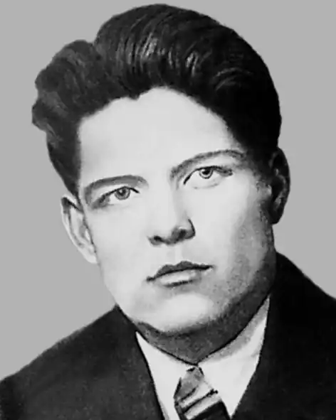

Поет-воїн, член Національної спілки письменників України (посмертно)
Народився 8 червня 1918 року в селі Сорокодуби в селянській сім'ї. Батько, повернувшись з фронтів першої світової війни, невдовзі після народження сина помер. Виховувала мати — Ганна Костянтинівна.
В 6 років пішов до Сорокодубської початкової школи. Потім навчався в Чернелівській семирічці та Малоклітнянській середній школі. Під час навчання в Малій Клітній почав писати поезії та друкуватись в районній газеті. В 1938 році стає студентом філологічного факультету Дніпропетровського університету. В перші дні війни в червні 1941 року студент третього курсу Булаєнко В.Д. добровольцем іде на фронт в званні молодшого лейтенанта. В районі Донбасу потрапляє в оточення і в полон. Згодом втікає з полону і повертається в рідне село. Пише поезії, читає їх односельчанам. З березня 1944 року В.Булаєнко знову в діючій армії. 19 серпня 1944 року при визволенні прибалтійського міста Бауска був смертельно поранений. В 1958 році вийшла перша збірка "Поезії". В 1973 році його вірші перекладені на російську мову. Ім'я поета-воїна носять центральна бібліотека та вулиця у місті Красилові. Він навічно занесений в списки студентів філологічного факультету Дніпропетровського університету. В 1961 році поет посмертно прийнятий в Спілку письменників України.